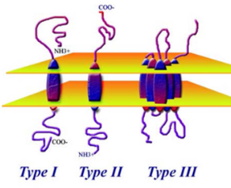

2 Strategies for Virus Entry
Viruses need to use parts of the host cell to make copies of themselves. This means they have to closely connect with the cell to get what they need.
Viruses have three important tasks to get inside a cell. First, they stick to the cell’s surface. Then, they get inside the cell. Once inside, they uncover their genetic material, releasing it into the cell’s center.
2.1 Virus Attachment
When a virus wants to get into a cell, it starts by attaching itself to the cell’s surface. This only works if the virus can connect with certain cell surface parts called receptors. It’s the initial step in the process.
2.1.1 Attachment for Enveloped Viruses

Viruses use their proteins to attach to cells. Viruses with envelopes do this wtih spikes on their surface. There are two types of these spikes covered in this course:
Type I
Examples are HIV’s gp120 and the HA protein in influenza viruses.
Type II
This includes the G protein in paramyxoviruses.
2.1.2 Non-Enveloped Viruses
Non-enveloped viruses have a different way of attaching to cells. They use parts that stick out from their outer shell, called the capsid. These parts can be:
Projections
Capsid Projections in the Adenovirus Like the trimeric fiber proteins in Adenovirus.
Regions
Capsid Protein C Some parts of the capsid protein, such as the “canyon” in picornaviruses.
2.1.3 Cell Receptors
Viruses use cell receptors to stick to cells. These are like keys that fit into specific locks on the cell’s surface. There are two main types of receptors: proteins and carbohydrates.
Viruses can connect to primary receptors, which are like main locks, and sometimes to secondary receptors, which are like extra locks. For example, HIV-1 uses CD4 as its main lock, and CCR5 is like an extra lock.
2.1.3.1 Protein Receptors
There are many different molecules on the surface of cells that act like doors for viruses.
Some of these molecules don’t seem to do anything else (e.g., PVR for Poliovirus), while others have a specific job (e.g., CD55 for Echovirus, which helps with the immune system).
2.1.3.1.1 Identifying Protein Receptors
There are several ways:
Using Specific Monoclonal Antibodies
Using Antibodies to Detect Virus Binding One way is by using specific monoclonal antibodies, which are like tiny soldiers that target and block the virus from sticking to the receptor. Another method is to use a receptor in a soluble form, like a decoy, to catch the virus before it attaches. Lastly, researchers might use a receptor antagonist, which is like a blocker, to prevent the virus from binding to the receptor.
To see if the virus is there, scientists can use something called ELISA, which is a bit like a virus detector test for the cell’s surface.
Virus Overlay Protein Blot Assay
A Schematic of a Blot Assay It’s a bit like when placing a sticker on a piece of paper. The virus sticks to these proteins that are put on a special paper. For example, the lymphocytic choriomeningitis virus sticks to a protein called α-dystroglycan that’s on the paper. This helps scientists understand how viruses attach to cells.
2.1.3.2 Carbohydrate Receptors
Certain viruses have developed a clever strategy – they’ve learned to attach to carbohydrate molecules on the surface of cells. These carbohydrates are like flags on the cells, made of special sugars. These flags are found on proteins and fats on the cell’s surface. The fascinating thing is that these flags are present on cells from various animals. So, these viruses can infect a wide range of hosts, kind of like having a key that fits many different locks.
2.1.3.2.1 Identifyign Carbohydrate Receptors
There are three main ways:
Virus Protein Properties
A Schematic of the Sendai (i.e., Paramyxovirus) Virus Sometimes, the characteristics of certain virus proteins can provide hints about how they work.
For instance, some viruses have proteins with sugar molecules attached (glycoproteins), and these proteins can do interesting things. For example, the attachment protein (HN) in the Sendai virus has a special ability called neuraminidase activity, which suggests that a sugar molecule called sialic acid might be really important for the virus to stick to cells.
Enzymes that Remove or Destroy a type of Carbohydrate
Destroying a Certain Kind of Carbohydrate There are enzymes that can do just that! One of these enzymes is called neuraminidase (NA), and it works by removing a particular kind of sugar molecule called sialic acid from the cell’s surface.
This sugar is like a lock that the influenza A virus uses to attach to cells. When we use neuraminidase to take away this lock, the virus can’t get in. This is like having a way to break the virus’s key, so it can’t open the cell’s door anymore.
Antibodies to Block Virus Attachment
Using Proteins to Inhibit Virus Binding Think of antibodies as tiny warriors that can fight against viruses. Some antibodies are really good at stopping viruses from attaching to cells. For instance, there’s a specific antibody called anti-galactosyl ceramide that can act like a shield to block HIV from infecting cells. It’s like having a superhero shield that stops the virus from getting close to the cell’s entrance.
2.1.4 Why Target Virus Receptors?
Finding out about virus receptors is like discovering the virus’s weak point. When we know which parts of cells the virus uses to attach, we can figure out how to stop it. This means we might be able to prevent the virus from getting into cells in the first place. There are different ways to do this, like using special antibodies that can neutralize the virus or using a kind of decoy - a soluble form of the receptor - that tricks the virus into attaching to it instead of the real cells. It’s like setting up traps to catch the virus before it can cause harm.
2.2 Virus Internalization
Once the virus sticks to the cell, it needs to deliver its genetic material inside so it can make copies. To do this, the virus triggers certain signals that help it get inside the cell. It’s like the virus is sending messages to open the cell’s door. When the virus first connects with the receptor, it can set off a chain reaction of signals.
For example, the Adenovirus uses a receptor called integrin a2b3. When this connection happens, it’s like pressing a button that activates different processes inside the cell. This includes things like PI3K getting activated, which is like starting a car’s engine. Then, molecules like PIP3 work like fuel, making another process called rho GTPases start. This process changes the cell’s shape, helping the virus get inside. It’s kind of like the virus is using a series of switches and levers to open a secret door into the cell.
2.3 Virus Entry
Enveloped viruses have two main ways to enter cells. First, they can fuse their outer layer with the cell’s outer layer, like two bubbles merging. Second, they can hitch a ride inside the cell through a process called receptor-mediated endocytosis, like a Trojan horse sneaking in.
On the other hand, non-enveloped viruses use different tactics to get inside cells. For example, the poliovirus changes its shape when it connects to a receptor (i.e., A particles), creating a tiny hole in the endosome where it’s trapped. Through this hole, the virus’s genetic material can slip into the cell, a bit like a secret passage being unlocked.
2.3.2 Mechanisms by Enveloped Viruses
There are two ways enveloped viruses can enter cells: ones that care about pH and ones that don’t. We can tell the difference by using special compounds like chloroquine and monensin, which stop acidic stuff in the endosomes from working. The way a virus enters depends on its fusion protein, a bit like how different keys fit different locks.
2.3.2.1 Example of a pH Dependent Mechanism
First, the virus sticks to a receptor called sialic acid, and the cell brings it inside using endocytosis, like a package delivery.
Inside the cell, the endosome’s pH becomes more acidic, like a lemon. This acid bath causes a transformation in the virus’s hemagglutinin (i.e., HA) protein. It goes from a quiet state to a supercharged one, ready to fuse. This HA now acts like a bridge between the virus and the endosomal membrane. It pulls them together, making them become one, like joining two puzzle pieces.
2.3.2.2 Example of a pH Independent Mechanism
Fusion happens at a normal pH, like the one in our bodies, and it’s controlled by a special virus protein called the fusion (F) protein.
The process begins with the virus attachment protein (HN) connecting to the cell’s receptor (sialic acid). This connection makes the HN change shape. This shape change then causes the F protein to also change shape. Think of it like a domino effect: the first domino (HN) falls, which makes the second one (F protein) tip over. This change in the F protein is like a key turning in a lock, allowing the virus and cell membranes to fuse together, a bit like two soap bubbles merging.
2.3.2.3 Cell-to-Cell Fusion Virus Transmission
Sometimes, infection can happen in a unique way: the outer shell of an infected cell fuses directly with an uninfected cell’s outer shell.
This fusion can lead to the creation of big cells with multiple nuclei, kind of like cells joining together to form a team. This is seen in various tissues and cells.
A group of viruses called paramyxoviruses, such as the respiratory syncytial virus, are known to cause this kind of fusion. It’s like the viruses are playing a trick, making cells merge and work together, but it’s not for the good – it helps the virus spread.
2.3.3 Mechanisms by Non-Enveloped Viruses
Non-enveloped viruses have another way to get their genetic material into cells.
One way is by creating a protein-made pore in the cell’s outer layer. Think of it like poking a small hole in a balloon.
Another way is by messing up the cell’s outer layer when the virus is taken inside through endocytosis. It’s like opening a door, but making a bit of a mess in the process. This helps the virus get its genetic material where it needs to go.
2.3.3.1 Example: Poliovirus Uncoating
Poliovirus goes through a series of shape changes when it meets the cell’s surface. These changes help the virus send its genetic material inside the cell.
Scientists can tell these different forms apart by how they behave when spun in a machine called a centrifuge. It’s like sorting different types of beads by spinning them really fast – each type settles at a different level.
2.4 Intracellular Trafficking
To move their capsids around inside the cell, viruses use special transport systems within the cytoplasm.
For short distances near the cell’s surface, they travel along actin filaments. It’s like taking a short walk around the neighborhood.
For longer journeys, they use microtubules. These are like highways within the cell. Imagine driving a longer distance on a big road.
These capsids can hitch rides in endocytic vesicles, like getting inside small vehicles. They then travel through the cell’s interior, where they link up with tiny motors like dynein. These motors help them move, a bit like being pulled along by a tiny train.
2.5 Uncoating
Uncoating is the last step of the entry process, where the virus sets its genetic material free into the cell’s center. This genetic material is enclosed by a matrix protein.
The matrix protein gets separated from the genetic material through a process where the virus’s interior becomes more acidic. This acidification is helped by a protein called M2 that the virus carries with it. It’s like the virus has a special key that makes the interior more acidic, and this helps unlock the genetic material from the matrix protein.
2.5.1 Example: Influenza Virus
When it comes to influenza virus, uncoating involves a specific process. The M2 ion channel, acting like a tiny gate, lets protons from the endosome into the virus. This makes the virus’s insides more acidic, which helps break apart the connection between the M1 protein and the ribonucleoproteins (RNPs, which carry the genetic material).
This process is quite important for designing antiviral drugs. For instance, amantadine is a drug that interferes with the activity of the M2 protein. By blocking the M2 protein’s function, it’s like putting a lock on that tiny gate and preventing the virus from undergoing the uncoating process effectively.
2.6 Nuclear Import
Some viruses, both those made of DNA and a few from RNA, carry out their replication inside the cell’s nucleus.
For this to happen, the virus’s genetic material and its accompanying proteins have to get inside the nucleus through something called the nuclear pore complex (i.e., NPC).
This transport through the NPC involves a series of steps:
- The virus has to move from the cytosol to the nucleus.
- It needs to bind to the NPC, like finding the right door.
- It has to pass through the pore itself.
- Importantly, the virus proteins need to have a Nuclear Localization Signal (i.e., NLS) so that importin proteins can recognize them. This NLS acts like a passport that allows the virus proteins entry into the nucleus. This process can also affect the virus’s ability to infect different hosts, like how the flu virus’s host range might be determined in part by whether its proteins can be recognized by importin proteins.
NPCs have a diameter of about 39 nanometers. Only the smallest virus capsids, such as Parvovirus, can fit through without any changes. However, larger viruses face a challenge due to their big size. They need to undergo some changes, like taking off a piece of their outer layer.
For example, the adenovirus changes its structure a bit and attaches to specific parts of the NPC, allowing its DNA to slip through. In the case of viruses like HSV (herpes simplex virus), they have special proteins that help them grab onto the NPC, and this helps their DNA get inside the nucleus. For viruses like influenza, which has a segmented genome, the individual segments (kind of like puzzle pieces) go through the NPC one by one. It’s like getting a large piece of furniture through a narrow doorway by taking it apart and reassembling it inside.